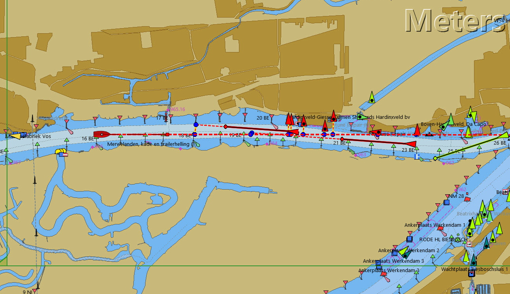
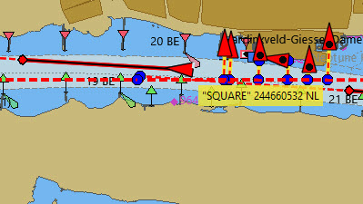
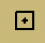
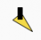
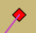
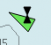

AIS

Câble "AIS Pilotplug to USB"

Récepteur AIS de base
|
Paramètres OpenCPN AIS
Pour obtenir les meilleures performances et éviter d’encombrer l’écran, les paramètres de cible AIS doivent être ajustés. Cela aidera à réduire le nombre d’alarmes non pertinentes |
Connexion du récepteur AIS
Un récepteur AIS peut être connecté de la même manière que le GNSS. Le débit de données AIS typique est de 38 400, au lieu de 4 800. Cependant, le moyen le plus simple est de vous procurer un câble "AIS Pilotplug to USB". Cela vous donnera également une position GNSS (pas besoin d’un GNSS séparé)
Paramètres de réglage des cibles AIS
Options Bateaux
Cibles AIS
Les paramètres typiques sont affichés.

Interprétation des informations AIS
clic-droit
Le texte survolé indique le nom, le numéro MMSI et la nationalité du navire.

Cible requise … (AIS Class B)

Le navire concerné est mis en évidence par un rectangle brisé

Cible requise … (AIS Class B)
Liste des cibles …
Interprétation des informations AIS
| Icone_AIS | Information | Icone_AIS | Information |
|---|---|---|---|
|
Un AIS actif SART et est un appel de détresse égal à une transmission "Mayday". Suite à ce sujet sur ce lien : ais/sart.html[sart] |
La poupe en forme de V indique une cible de classe B. Les remorqueurs et les bateaux-pilotes embarquent très souvent des transpondeurs de classe B. Ceux-ci sont souvent conçus spécifiquement pour les petits bateaux commerciaux, les bateaux de pêche et les bateaux de plaisance |
La poupe en forme de V indique une cible de classe B. Très souvent, les remorqueurs et les bateaux-pilotes disposent de transpondeurs de classe B. Ceux-ci sont souvent conçus spécifiquement pour les petits bateaux commerciaux, les bateaux de pêche et les bateaux de plaisance. |
|
Icône affichée lors du test un appareil AIS-SART. |
|
Les objectifs sont conformes avec la norme européenne AIS Spécification intérieure. |
|
Avion participant à la recherche et au sauvetage. |
|
Ce navire arbore le "Drapeau Bleu Inland", AIS standard Européen. Le signal "Pavillon bleu", couramment vu à l’intérieur des terres, sur l’eau, indique que le navire demande un passage ou une traversée « stbd-stbd » . Ce signal bleu est allumé/éteint manuellement par la cible. |
|
Danger potentiel. |
Aton, aide à la navigation, par exemple un phare ou une bouée avec un émetteur AIS. |
Aton, Aide à la navigation, par exemple un Phare ou une Bouée avec un émetteur AIS. |
|
Aucun danger Non identifié (nom issu des données mises en cache) |
|
Aton, Aide à la navigation qui est hors de sa position supposée. Par exemple, une bouée équipée de l’AIS qui est à la dérive. |
|
Aucun danger Non identifié (nom issu des données mises en cache) |
|
Aton Virtuel, Aide Virtuelle à la navigation, pas un vrai marqueur. Peut être utile pour un ensemble de de situations. Uns nouvelle épave, par exemple. Further explanations. |
|
Aucun danger Aucun danger identifié |
|
Aton virtuel, hors position. Actuellement vu dans la nature, mais peut être une erreur de configuration de l’utilisateur . (Ancien affichage de style.) |
|
Cible perdue |
 |
Station AIS de base |
|
Vaisseau dont la position est perdue - position indisponible. Affiché à la dernière position connue. |
Les cibles suivantes ne s’affichent que si les messages DSC, les messages de GpsGate, les messages Radar ou APRS sont mélangés au flux AIS entrant, en utilisant, par exemple, un multiplexeur. Plus d’information dans les pages suivantes. |
|
|
Navire hors de contrôle. |
|
Station DSC. Seul le message DSC est reçu. La position ne contient que degrés et minutes de Latitude et de Longitude. |
|
Navire limité dans la capacité de manoeuvre. |
|
Station DSC. DSC et messages DSE sont reçus. Le message DSE contient les décimales manquantes de minutes de Latitude et de Longitude. Le résultat est une position bien plus précise. |
 |
Navire contraint par avarie. |
 |
DSC Station transmettant un signal de détresse. Considérez ceci comme un appel « Maiday ». |
|
Le navire échoué. |
|
GpsGate Buddy target. |
 |
Navire en pêche. |
|
Cibles AIS |
Bateau à grande vitesse et aile à effet de sol. Cela inclut les hydrofoils, les aéroglisseurs et les embarcations de vol inférieures utilisant l’effet de sol. |
|
Cible ARPA |
|
|
Ancré ou amarré. Affiché lorsque le "statut de navigation" transmis est "à l’ancre" ou "amarré". Il n’y a aucune garantie que ce statut soit correct, car il est réglé manuellement sur le vaisseau transmetteur… |
|
…illustré par ce navire. Notez la ligne noire sur le cercle jaune. Cela indique que le vaisseau change de direction vers babord (à gauche), également illustré par le décalage dans la mise à jour de l’affichage. ROT - Le taux de virage est disponible dans la boîte de dialogue « Données émise par la cible AIS », via le menu du clic droit d’OpenCPN. |


Exemples AIS

Un navire à la jonction semble changer de cours pour entrer dans le canal « our ».
Clic-droit
Le navire est identifié.

'Zeldenrust' est un danger potentiel et a déclenché une alerte en fonction des paramètres entrés dans OpenCPN.
La longueur des flèches du prédicteur COG est fixée à trois minutes.
Il y a une ligne d’extension en pointillés rouge du prédicteur COG qui aide à fournir une estimation du temps à CPA, si target query n’a pas été utilisée.
Les positions estimées des navires au CPA sont montrées par les points bleus.
La ligne jaune surlignée indique la distance à partir du CPA.
"Zeldenrust" est allé plus loin et va maintenant passer à notre babord. CPA 48,5 m.


"Zeldenrust" est passé et tout va bien.
Le navire "Neptune repair" est un danger potentiel mais il est amarré.